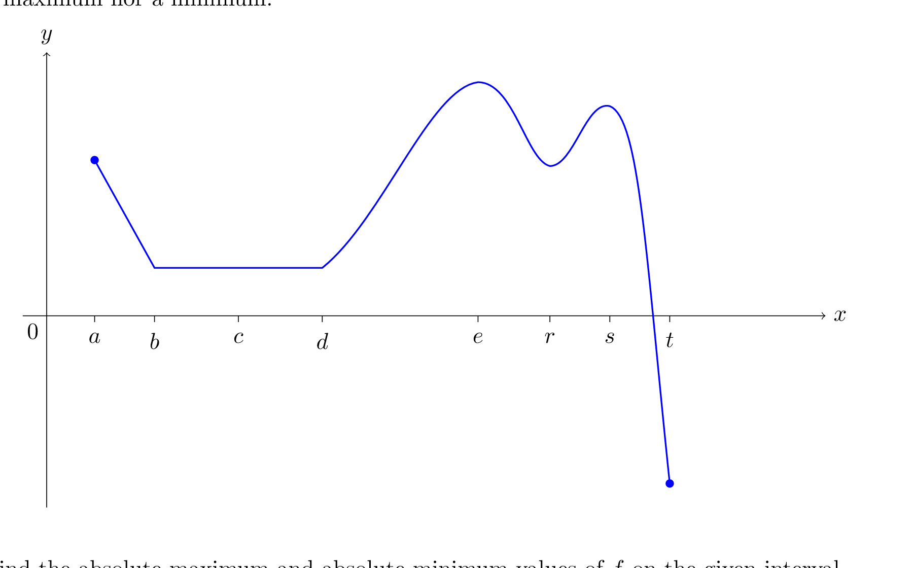

曲线从 a（左端点，较高）下降，到 b 后水平直到 d，再上升，在 e 到达全图最高点，随后下沉到 r（谷底），再升到 s（第二个峰，比 e 低），然后急剧下降，在 t 处穿过 x 轴，最后停在轴下方那个实心点（全图最低点）。
| 点 | 绝对？ | 局部？ | 理由 |
|---|---|---|---|
| a | — | 局部最大 | 左端点，向右立即下降，故 f(a) 大于附近的值；但 f(e) > f(a)，所以不是绝对最大。 |
| b | — | 局部最小 | 左侧递减到 b，右侧在 [b,d] 上恒等于 f(b)，故附近 f(x) ≥ f(b)。注意它不是局部最大：左边紧邻处 f(x) > f(b)。 |
| c | — | 既是局部最大又是局部最小 | c 在水平段内部，附近 f(x) = f(c) 恒成立，f(c) ≤ f(x) 与 f(c) ≥ f(x) 同时满足（非严格极值）。 |
| d | — | 局部最小 | 左侧水平、右侧递增，附近 f(x) ≥ f(d)。 |
| e | 绝对最大 | 局部最大 | 全图最高点。 |
| r | — | 局部最小 | 两峰之间的谷底；但它高于右端点，故不是绝对最小。 |
| s | — | 局部最大 | 峰，但 f(s) < f(e)，不是绝对最大。 |
| t | — | 都不是 | 曲线在 t 处单调下降穿过 x 轴（f(t) = 0），两侧都在减小，没有极值。 |